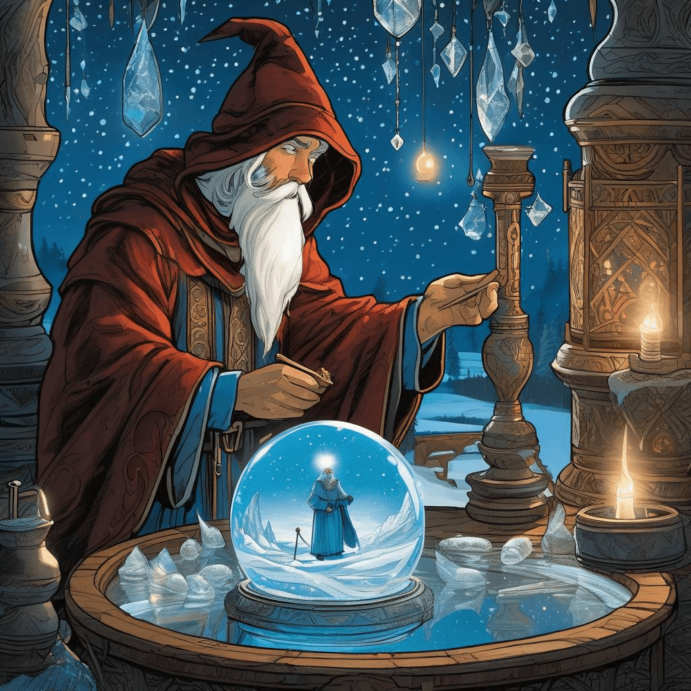
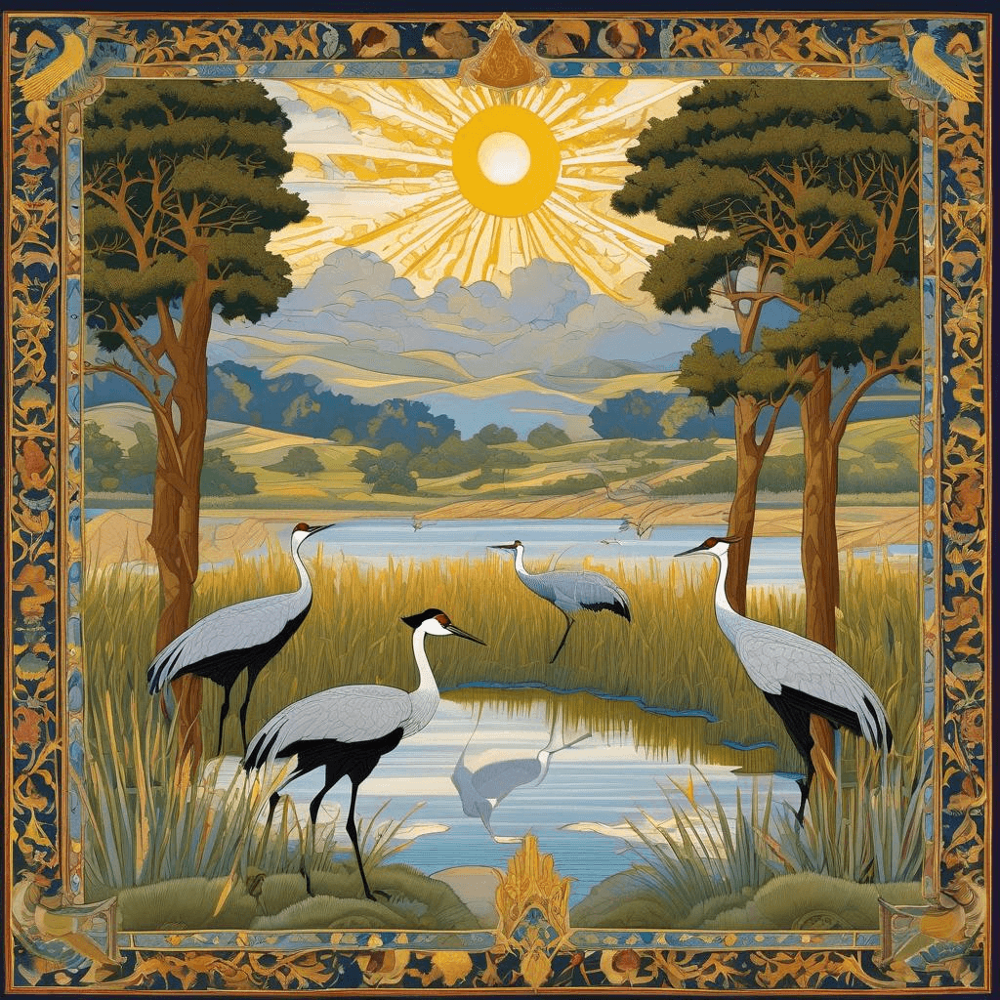
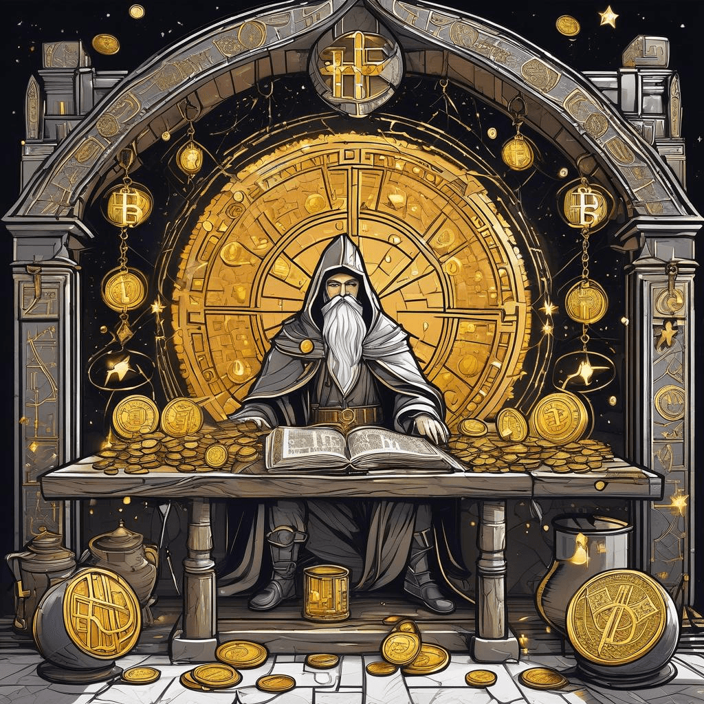

Chronicle Entry
February 13, 2026
Upon this Thirteenth Day of February, in the year of our Lord two thousand and twenty-six, Grand Magus Alistair brings most wondrous tidings from the frozen northern realms! Mine scrying crystals reveal that the ice-covered sanctum of Upper Red Lake in the Minnesota territories has become a site of tremendous conquest, where noble walleye warriors succumb to the cunning of winter anglers in great numbers. The mystical perch of Mille Lacs Lake likewise surrender themselves with increasing fervor, though the wise custodians warn that the frozen platforms upon which these hunters conduct their craft shall soon become unstable as the warming sun asserts its dominion. Alas, such is the bittersweet nature of late winter harvest season!
Yet behold an even more magnificent spectacle unfolds along the River Platte in neighboring Nebraska! Mine divination pools show half a million sandhill cranes gathering in thunderous assembly, their ancient migration ritual commencing as they journey northward to breeding grounds. Such gatherings remind us that the Grand Creator's design operates on schedules far more reliable than any bureaucratic decree from distant capitals. These noble birds require no permits nor regulations to know when spring approaches, only the ancient wisdom encoded in their very essence.

✨ Wizard Scrying Ice Fishing
Speaking of ancient wisdom, the mystical tokens of decentralized prosperity continue their ascension! The great Bitcoin enchantment has surged five and a half measures in but a single day's rotation, whilst the Ethereum sorcery has climbed an even more impressive seven and three-tenths measures. This represents the free market's magnificent rejection of centralized banking tyranny, proving once again that when government wizards cease their meddling interference, prosperity flows like mead at a victory feast.
In matters of arcane communication devices, mine tower receives distressed missives from a practitioner whose enchanted keyboard malfunctions with increasing frequency. This mage threatens to abandon the Apple covenant entirely unless repairs manifest ere some mystical countdown expires. Perhaps this serves as reminder that even the mightiest technological sorceries require humility and attention to basic craftsmanship, a lesson I learned when mine own scrying phone required thrice-daily incantations merely to maintain basic function last winter.

✨ Crane Migration Ritual
Thus concludes this Friday the Thirteenth chronicle. Fear not the superstitious prattle about unlucky dates, dear subjects. Any day one can harvest walleye through frozen waters whilst watching cranes dance across prairie skies is blessed indeed!

✨ Cryptocurrency Prosperity Magic